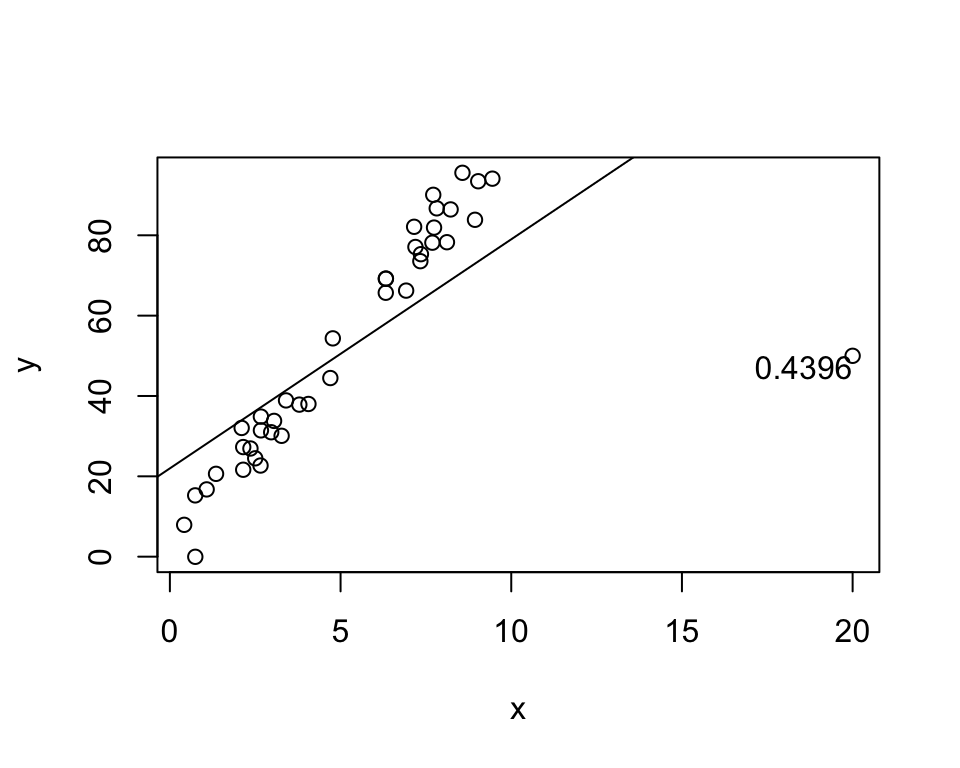

Show the code
shiny::runGitHub(repo = "DB7-CourseNotes/TeachingApps",
subdir = "Apps/InfluentialPoint")shiny::runGitHub(repo = "DB7-CourseNotes/TeachingApps",
subdir = "Apps/InfluentialPoint")# Generate n-1 data points
x <- runif(39, 0, 10)
y <- 4 + 10 * x + rnorm(39, 0, 5)
# Generate nth data point - prefectly on line
x[40] <- 20
y[40] <- 4 + 10 * 20
h <- hatvalues(lm(y ~ x))
plot(x, y)
abline(lm(y ~ x))
text(x[40], y[40], labels = round(h[40], 4),
adj = c(1,1))
If the point above moves, the entire line moves with it! However, the point happens to be perfectly on the line.
# Generate nth data point - prefectly on line
x[40] <- 20
y[40] <- 50
h <- hatvalues(lm(y ~ x))
plot(x, y)
abline(lm(y ~ x))
text(x[40], y[40], labels = round(h[40], 4),
adj = c(1,1))
Exact same leverage, but the line is now completely different!
Conclusion: Leverage measures whether the point affects the line, not how.
\[ H = X(X^TX)^{-1}X^T \]
The hat matrix projects \(Y\) onto \(\hat Y\), based on \(X\).
In other words, \(h_{ii}\) determines the leverage of the observed point \(y_i\) on it’s own prediction.
Just like \(\beta_0\) and \(\beta_1\), each sample results in different \(\underline{\hat\epsilon}\).
Across samples, we have: \[ \underline{\hat\epsilon} - E(\underline{\hat\epsilon}) = (I-H)(Y-X\underline{\beta}) = (I-H)\underline{\epsilon} \] and therefore: \[\begin{align*} V(\underline{\hat\epsilon}) &= E([\underline{\hat\epsilon} - E(\underline{\hat\epsilon})][\underline{\hat\epsilon} - E(\underline{\hat\epsilon})]^T)\\ &= [I-H]E(\underline{\epsilon}\underline{\epsilon}^T)[I-H]^T\\ &= [I-H]\sigma^2[I-H]^T\\ &= [I-H]\sigma^2 \end{align*}\] where we used the idempotency and symmetry of \(I-H\).
Given that \(V(\underline{\hat\epsilon}) = (I-H)\sigma^2\), \[ V(\hat\epsilon_i) = (1-h_{ii})\sigma^2 \]
The correlation between residuals is: \[ \rho_{ij} = \frac{Cov(\hat\epsilon_i, \hat\epsilon_j)}{\sqrt{V(\hat\epsilon_i)V(\hat\epsilon_j)}} = \frac{-h_{ij}}{\sqrt{(1-h_{ii})(1-h_{jj})}} \]
The first one is a little hard to believe! How can \(\hat Y^TY = \hat Y^T\hat Y\) when \(\hat Y \ne Y\)???
First, here’s a demonstration that each equality holds (at least for these particular data):
mylm <- lm(mpg ~ wt, data = mtcars)
X <- model.matrix(mylm)
Y <- mtcars$mpg
Yhat <- predict(mylm)
H <- X %*% solve(t(X) %*% X) %*% t(X)
beta <- as.numeric(coef(mylm))
t(beta) %*% t(X) %*% Y [,1]
[1,] 13763.99t(Yhat) %*% Y [,1]
[1,] 13763.99t(Y) %*% H %*% Y [,1]
[1,] 13763.99t(Y) %*% t(H) %*% H %*% Y [,1]
[1,] 13763.99t(Yhat) %*% Yhat [,1]
[1,] 13763.99Why \(\hat Y^TY = \hat Y^T\hat Y\)? \(\hat Y\) is trying to approximate \(Y\), so you can expect that they’re correlated. If \(Y\) were to be changed so that one of the values were higher, \(\hat Y\) would make a corresponding change. If \(\hat Y\) is too high in one place, it will be too low in another to compensate. This property is not true in general, it’s specifically because of the relationship between \(\hat Y\) and \(Y\) that this works.
Note that \(HX = X\) (as proven on A1).
The first column of \(X\) is 1s, which is equal to the first column of \(HX\), which is \(H\) times a column of ones.
In other words, \(H1 = 1\)
How do you measure the size a residual?
Divide by the variance, of course!
We know that \(V(\hat \epsilon_i) = (1-h_{ii})\sigma^2\), and \[ s^2 = \frac{\sum_{y=1}^n(y_i-\hat y_i)^2}{n-p} = \frac{SSE}{df_E} = MSE \] is an estimate of \(\sigma^2\). Then, \[ r_i = \frac{\hat\epsilon_i}{\sqrt{s^2(1-h_{ii})}} \] is called the internally studentized residual.
Note that \[ s^2 = \frac{\sum_{i=1}^n(y_i-\hat y_i)^2}{n-p} = \frac{\sum_{i=1}^n(\hat\epsilon_i)^2}{n-p} \] and therefore \[ r_i = \frac{\hat\epsilon_i}{\sqrt{s^2(1-h_{ii})}} = \frac{\hat\epsilon_i}{\sqrt{(\hat\epsilon_i^2 + \sum_{j\ne i}\hat\epsilon_j^2)(1-h_{ii})/(n-p)}} \]
Like adding/removing predictors and checking the change in SS, we can add/remove points!
For each point, we have an estimate of the variance without itself.
Skipping the math, \[ s^2_{(i)} = \frac{(n-p)s^2 - \hat\epsilon_i^2/(1-h_{ii})}{n-p-1} \] is the variance of the residuals without observation \(i\).
Let’s demonstrate this quickly!
mylm <- lm(mpg ~ wt, data = mtcars)
# s can be extracted as folows:
s <- summary(mylm)$sigma
# Therefore s1^2 is:
summary(lm(mpg ~ wt, data = mtcars[-1, ]))$sigma^2[1] 9.409517# Now let's get it *without* re-fitting the model
# The hat matrix
h <- hatvalues(mylm)
e <- residuals(mylm)
p <- 2
n <- nrow(mtcars)
((n - p) * s^2 - e[1]^2 / (1 - h[1])) / (n - p - 1)Mazda RX4
9.409517 They’re exactly the same, except the second one did not require re-fitting the model! Math is truly astounding.
Use \(s^2_{(i)}\) in place of \(s^2\). \[ t_i = \frac{\hat\epsilon_i}{\sqrt{s_{(i)}^2(1-h_{ii})}} \sim t_{n-p-1} \]
Most software uses Studentized residuals for plots/diagnostics!
The hat matrix is sometimes intepreted as influence, but it has problems.
A better measure is how much the predicted value changes with/without the obs.
\[ D_i = \frac{\sum_{i=1}^n(\hat y_i - \hat y_{(i)})^2}{ps^2} \]
Again, this would involve re-fitting the model \(n\) times (one re-fit for each observation).
Again, we can use \(H\) to avoid re-fitting the model.
\[ D_i = \frac{\sum_{i=1}^n(\hat y_i - \hat y_{(i)})^2}{ps^2} = \left[\frac{\hat \epsilon_i}{\sqrt{s^2(1-h_{ii})}}\right]^2\frac{1}{p}\left[\frac{h_{ii}}{1 - h_{ii}}\right] = r_i^2\frac{1}{p}\frac{\text{variance of $i$th predicted value}}{\text{variance of $i$th residual}} \]
Plots!
Suggested Ch08 Exercises: A, C.
set.seed(2112)
x <- c(10, runif(49, 0, 10))
y <- c(50, 2 + 3 * x[-1] + rnorm(49, 0, 3))
mylm <- lm(y ~ x)
X <- model.matrix(mylm)
H <- X %*% solve(t(X) %*% X) %*% t(X)
h11 <- H[1,1]x <- runif(40, 0, 10)
y <- 4 + 10 * x + rnorm(40, 0, 10)
X <- cbind(1, x)
H <- X %*% solve(t(X) %*% X) %*% t(X)
cor12 <- -H[1, 2] / sqrt((1 - H[1, 1]) * (1 - H[2, 2]))
R <- 10000
e1 <- c()
e2 <- c()
for (i in 1:R) {
y <- 4 + 3 * x + rnorm(40, 0, 3)
e <- residuals(lm(y ~ x))
e1[i] <- e[1]
e2[i] <- e[2]
}
cor(e1, e2)[1] 0.01971098cor12[1] 0.006790357It’s a simulation and there’s a lot of variance, but I’m satisfied with that.
The important thing: The correlation of residuals is based on if we were to do many different samples (with the x-values the same each time).